1
Water Intrusion Response
Water/moisture conditions required active control inside and around the crawl-space area.
Crawl Space 10-02 required a multi-discipline progress effort involving water control, drainage improvements, plumbing work, HVAC/ductwork correction, moisture treatment, and interior/exterior coordination. The work required labor in tight crawl-space conditions, exterior setup, pumping/discharge effort, trenching, material handling, and mechanical/plumbing activity.
General labor and materials represented: crawl-space access labor, pumping and discharge setup, trenching, plumbing pipe/fittings, drainage piping or extensions, HVAC duct components, treatment materials, hand tools, lighting, and exterior water-management components.
Water/moisture conditions required active control inside and around the crawl-space area.
Exterior routing, trenching, and discharge work helped move water away from the building.
Crawl-space piping conditions required hands-on work and verification in the affected area.
Damaged or affected ductwork and airflow components required mechanical correction.
Treatment activity was performed to address crawl-space moisture and related contamination concerns.
Work was performed in tight crawl-space conditions with limited clearance and difficult access.
The work effort included both exterior drainage activity and interior vent/register work.
The work supports the property by reducing risk from moisture, water intrusion, airflow restriction, and damaged components.
These visual cards summarize the major work activities and labor effort documented for this crawl space.

Pump and discharge setup visible
Photo-documented water-control work
Open trench and drainage route visible
Photo-documented drainage work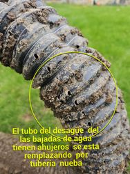
Discharge piping/downspout extension visible
Photo-documented exterior water management
Plumbing line work area visible
Plumbing work area documented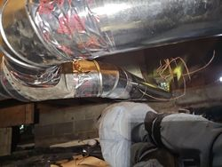
New or replaced ductwork visible
Photo-documented mechanical correction
Interior register/vent work visible
Photo-documented airflow work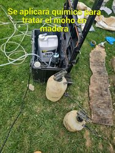
Treatment equipment/setup visible
Photo-documented moisture treatment activity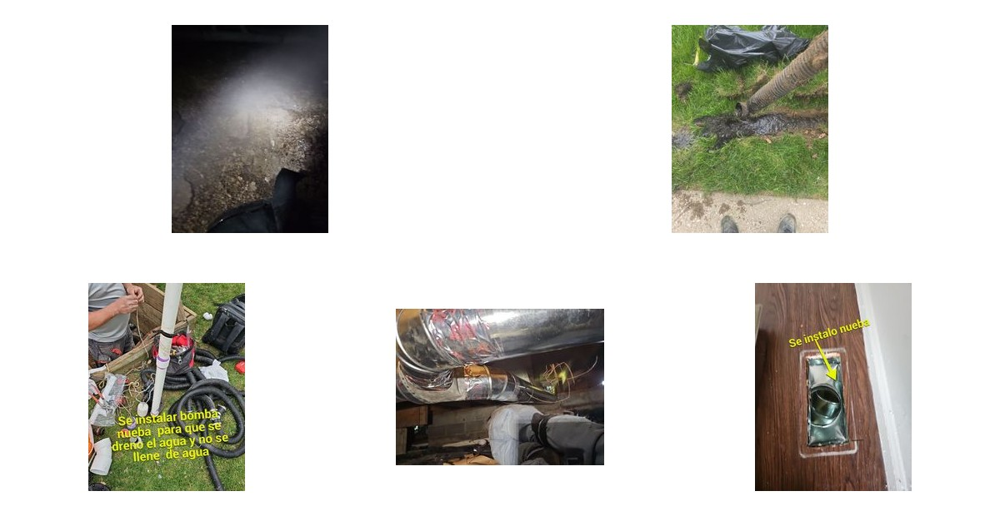
The crawl space showed water and moisture concerns, difficult access conditions, exterior water-routing issues at the building face, and affected plumbing/mechanical areas below the occupied floor system. These conditions required a coordinated work effort rather than a simple visual inspection.
AY's work included water-control effort, exterior drainage and discharge routing, trenching, plumbing-line work, HVAC/ductwork correction, moisture treatment activity, and interior vent/register work. The scope required labor in tight crawl-space conditions, exterior setup, equipment handling, material staging, and multiple work areas.
The work effort generally involved labor for crawl-space access, pumping and discharge setup, trenching, plumbing work, duct/mechanical corrections, treatment application, cleanup, and documentation. Materials and equipment represented in the work include pump/discharge hoses, drainage piping or extensions, plumbing pipe/fittings, HVAC duct components, treatment materials, hand tools, lighting, and exterior water-management components.
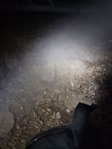
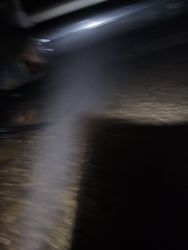
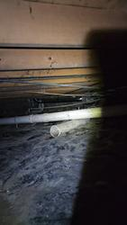
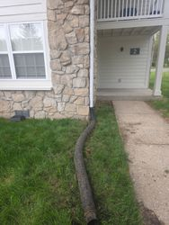
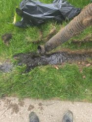
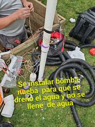

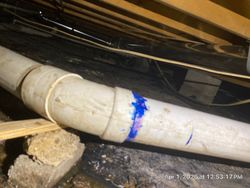
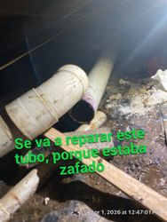
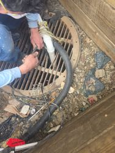

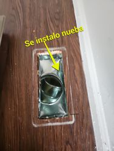